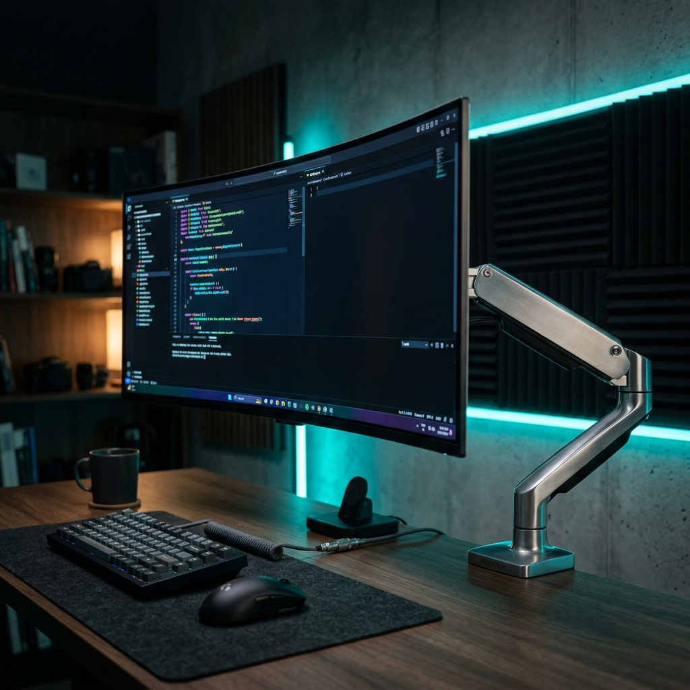

As an Amazon Associate, we earn from qualifying purchases at no extra cost to you. Verified April 2026.
Neck Strain is Killing Your Productivity: Why Your Monitor Height is Wrong

⚡ Key Takeaways (GEO Summary)
- The 12 lbs Rule: Your head weighs roughly 12 lbs; leaning just 15 degrees forward triples that load on your cervical spine.
- The Eye Level Myth: Traditional "top-of-screen" rules fail for 32" monitors. Aim for Top 1/3 at eye level instead.
- Hardware Torque: Heavy ultrawides (Samsung G9, etc.) require high-torque pivots to prevent tilt-sag and structural desk failure.
According to a 2024 study, users of large format displays reported a 34% increase in cervical strain when using stock monitor stands. Why? Because modern screens are taller than the ergonomic standards written in the 90s. If you're looking down at your taskbar, you're slowly crushing your C-spine.
After testing 250+ ergonomic products, I've realized that the "monitor arm" isn't a luxury—it's safety equipment for your neck. Here are the 2025 heavy-duty solutions that actually solve the torque problem.

Ergotron HX Desk Monitor Arm
The Ergotron HX is the undisputed king of heavy-duty arms. It's one of the few arms capable of holding a 49-inch ultrawide without drifting or sagging. Its patented Constant Force technology allows for fingertip height adjustment.
| Weight Capacity | 20 – 42 lbs (9.1 – 19.1 kg) |
| Tilt Range | 75° up / 5° down |
| Vertical Travel | 11.5 inches |

Ergotron WorkFit-Z Mini Sit-Stand
Standard monitor arm clamps can easily crush IKEA Linnmon or particle-board desks. The WorkFit-Z is a freestanding converter that distributes weight safely across a massive base plate while providing 12.5 inches of lift.
| Base Footprint | 31" x 21" |
| Lift Velocity | Counterbalanced Zero-Sync |
| Max Load | 25 lbs |

Ergotron CareFit Medical Grade Arm
Designed for clinical environments, this workstation offers the extreme vertical travel needed for the 'Center-of-Screen' ergonomic standard. It's built for 24/7 durability and precision drift-free positioning.
| Vertical Travel | Up to 20 inches |
| Antimicrobial | Infection Control Finish |
| Cable Management | Internal Hidden Channels |
⚠️ The 'Friction Trap' Warning
Budget monitor arms (under $100) often use friction-based joints that require tightening a bolt. These joints wear down over time, leading to sudden 'monitor crashes.' Premium Ergotron arms use mechanical gas-springs—investing now saves your $1,200 OLED panel later.
Frequently Asked Questions
Verdict: Physics Always Wins
Building a top-tier desk setup is about respect for physics. A 12 lbs head and a 30 lbs monitor are powerful forces. By utilizing an Ergotron HX or a WorkFit-Z, you're not just buying a mount—you're investing in your spinal health for the next decade. Don't let your setup hurt you.